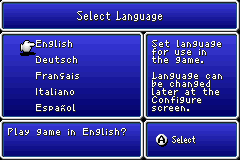

Final Fantasy I & II - Dawn of Souls (Europe) (En,Fr,De,Es,It)
SRAM 256K
Cartridge Identity
- Game Code
BFFP(FamilyBFF)- Header Title
FF1&2DAWNOFS- Maker / Revision
01/ rev0- ROM Size
- 16.0 MiB (16,777,216 B)
- Save Media
SRAM 256K- SHA-256
6d13e8c0be823b594d93e23179fb43324067790d53c9b9fd7bac9d89e99e7e00
Screenshots


Observed Battery Save Layout
- Fill Byte & Active Size
0xFFfill · 40–40 / 32,768 B active (entropy 3.75 bits/B)- Active Offset Ranges
0x0–0x27(1 total)- ASCII Magic / Headers
- None detected
- Observed Variable Regions
- 0 bytes across 0 spans: None
- Candidate Checksum/Counter Spans
- None
Regional Variants & Revisions (Family BFF)
- Final Fantasy I & II - Dawn of Souls (USA) (
BFFE, 16 MiB) - Final Fantasy I, II Advance (Japan) (Rev 1) (
BFFJ, 16 MiB) - Final Fantasy I, II Advance (Japan) (Rev 1) (Virtual Console) (
BFFJ, 16 MiB)